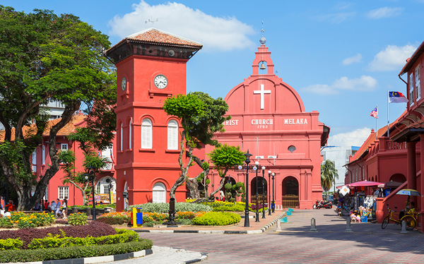

馬來西亞聯邦國旗又稱輝煌條紋（馬來語：Jalur Gemilang），是馬來西亞的國家主權象徵之一。 國旗由十四道紅白相間的橫條所組成，左上角為藍底加上黃色的新月及十四芒星圖案。長寬比例為2：1。 這道旗幟由莫哈末·韓查設計，從373個參賽作品裡選出。自1963年9月16日馬來西亞聯邦成立時正式啟用。 1997年8月31日馬來亞獨立四十週年之際，時任馬來西亞首相馬哈迪·莫哈末宣布將國旗命名為“輝煌條紋”。
橘色：台灣
綠色：馬來西亞
1.Perlis:玻璃市
2.Kedah:吉打
3.Pulau Pinang:檳城
4.Perak:霹靂
5.Kelantan:吉蘭丹
6.Terengganu:登嘉樓
7.Pahang:彭亨
8.Selangor:雪蘭莪
9.Negeri Sembilan:森美蘭
10.Melaka:馬六甲
11.Johor:柔佛
12.Sarawak:砂勞越
13.Sabah:沙巴
聯邦直轄區（马来语：Wilayah Persekutuan；英语：Federal Territory）是馬來西亞由聯邦政府管轄的一級行政區，由吉隆坡、納閩、布城三個地區組成。 吉隆坡聯邦直轄區於1974年成立；納閩聯邦直轄區和布城聯邦直轄區隨後於1984年和2001年相繼成立。 這三個聯邦直轄區由聯邦政府下的聯邦直轄區部直接管轄，不隸屬於任何州屬。 這三個聯邦直轄區過去因種種原因而從原屬州屬被劃分出來割讓給聯邦政府。 吉隆坡是馬來西亞首都；布城是行政首都和聯邦政府的行政中心；而納閩則是聯邦政府在東馬設立的離岸金融中心。 吉隆坡和布城為雪蘭莪州的內飛地，納閩則是沙巴州沿海島嶼。在每年的2月1日，吉隆坡、納閩和布城都會慶祝聯邦直轄區日。
馬來西亞全國總面積共330,345平方公里，被南海分為東西兩大部分：西半部的馬來半島分為十一個州及二個聯邦直轄區吉隆坡和布城，常稱為“西馬”，北接泰國，南部隔著柔佛海峽，以新柔長堤和第二通道與新加坡連接；而東半部位於世界第三大島婆羅洲的北部，分屬沙巴和砂拉越兩個州及納閩聯邦直轄區，常被稱為“東馬”，南鄰印度尼西亞的加里曼丹，而文萊則與東馬三面接壤。 首都位於吉隆坡，是馬來西亞人口中最密集和最繁榮的地區，聯邦政府所在地則位於布城。馬來西亞的地理位置接近赤道，其氣候於亞洲熱帶型雨林氣候，導致人口密度較低，而馬來西亞半島地區的人口密集度比婆羅洲地區高許多，也是首都和聯邦政府所在地。截至2020年，全國人口總計3227萬。馬來西亞的聯邦官方宗教雖然為伊斯蘭教，但國民於《馬來西亞聯邦憲法》下享有宗教自由的權利。 國內主要宗教有伊斯蘭教、佛教、基督教新教、天主教、印度教、錫克教等。馬來西亞民族方面十分多元，由馬來人、華人（包括峇峇娘惹/土生華人）、印度人、原住民（伊班人、卡達山杜順人、比達友人、閃邁人、其他西馬半島原住民、東馬砂拉越和沙巴原住民）和少數歐亞群體（克里斯坦人）等共同組成的多元民族國家。 馬來西亞最高元首為君主立憲制國家元首，由馬來統治者會議選出，任期五年。政府則由獲得最多國會議席的政黨或聯盟的領袖-總理所領導，政治體制沿襲自英國的威斯敏斯特製度。在外交方面，馬來西亞是聯合國會員國，也是環印度洋區域合作聯盟、亞洲太平洋經濟合作組織、英聯邦、東南亞國家聯盟、不結盟運動以及伊斯蘭會議組織等的成員國，同時也是東南亞國家聯盟以及伊斯蘭會議組織的創始國之一。馬來西亞也曾擔任東南亞國家聯盟、伊斯蘭會議組織以及不結盟運動的主席，也曾擔任聯合國安理會非常任理事國。